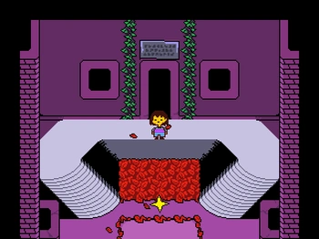
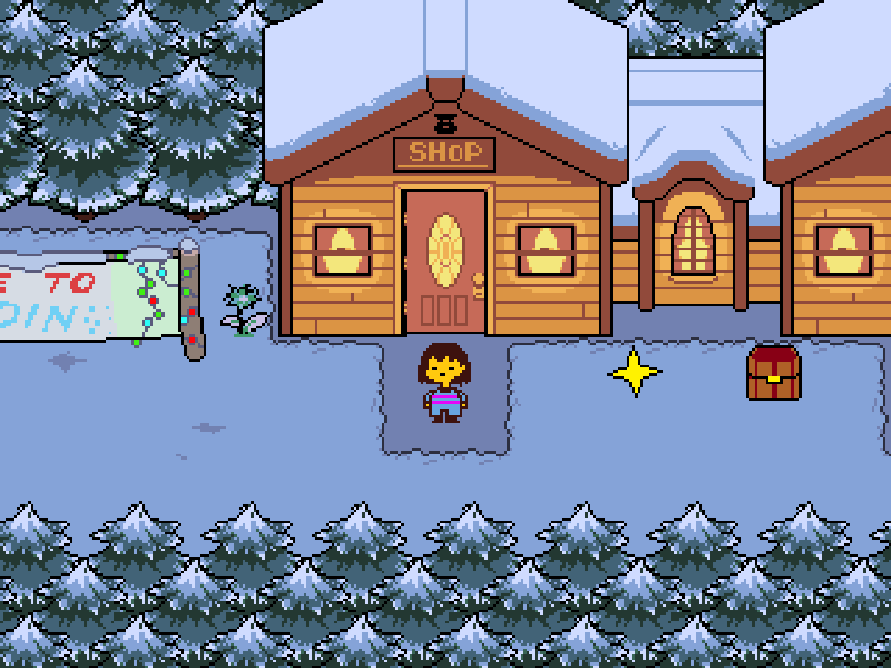
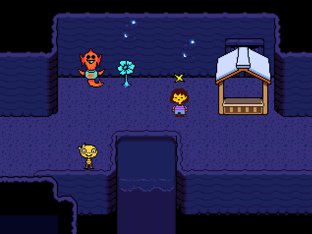
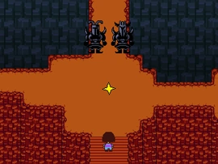
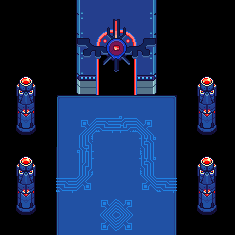
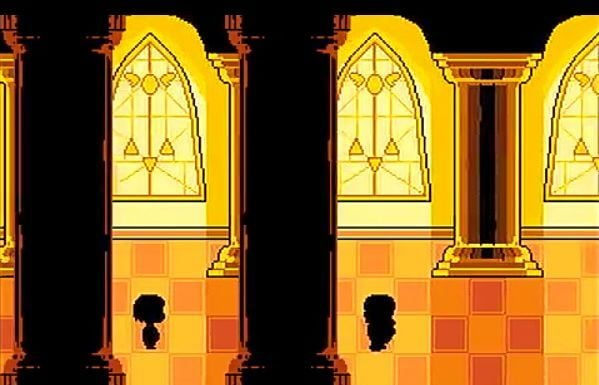

HOME/ |
FRISK/ |
BOSSES/ |
AÇÕES/ |
CRIADOR |

HISTÓRIA
Há muito tempo, humanos e monstros entraram
em guerra. Os humanos venceram e prenderam
os monstros no Subsolo com uma barreira
mágica. Anos depois, uma criança cai nesse
mundo e precisa escolher entre lutar ou fazer
amizade com os monstros, mudando
o destino de todos.






História detalhada
O mundo de Undertale acontece em uma realidade onde humanos e monstros já viveram juntos na superfície. No começo, não havia uma separação clara entre as duas raças, mas com o passar do tempo surgiu desconfiança e medo. Os humanos começaram a enxergar os monstros como perigosos por causa de sua magia e de sua aparência diferente, e isso acabou levando a um grande conflito entre eles.
A guerra terminou com a vitória dos humanos. Depois da derrota, os monstros foram selados em um lugar abaixo da terra, conhecido como Underground, uma região isolada da superfície por uma barreira mágica muito poderosa. Essa barreira impede que os monstros saiam e também impede que humanos entrem.
Mesmo após serem selados, os monstros não desapareceram. Eles continuaram existindo no Underground e, com o tempo, criaram uma nova sociedade. Construíram cidades, desenvolveram formas de convivência e tentaram se adaptar a uma vida sem contato com o mundo exterior. Apesar disso, muitos deles ainda carregam tristeza e a lembrança da vida na superfície.
No centro dessa história está a família real dos monstros, que tenta manter a esperança de um futuro melhor. O rei acredita que existe uma forma de libertar seu povo, embora isso envolva decisões difíceis e consequências dolorosas. Ao mesmo tempo, muitos monstros ainda desejam viver em paz e sonham com a possibilidade de reconciliação com os humanos.
A história de Undertale é marcada por temas como perda, separação e esperança. Mesmo com o passado de conflito, existe sempre a ideia de que as coisas podem mudar, dependendo das escolhas e da vontade de cada um.